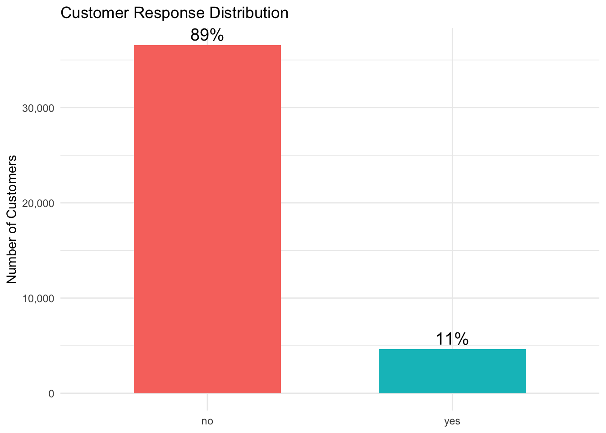
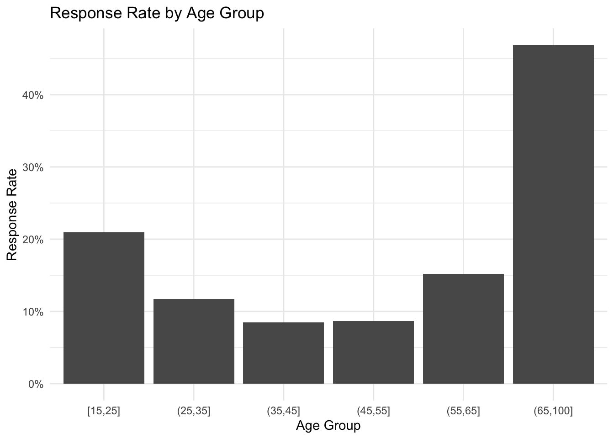
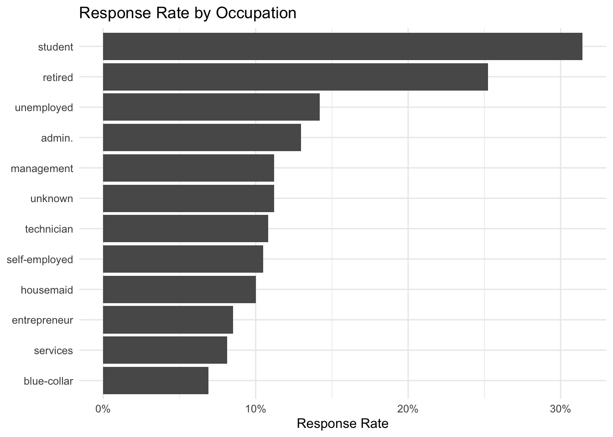
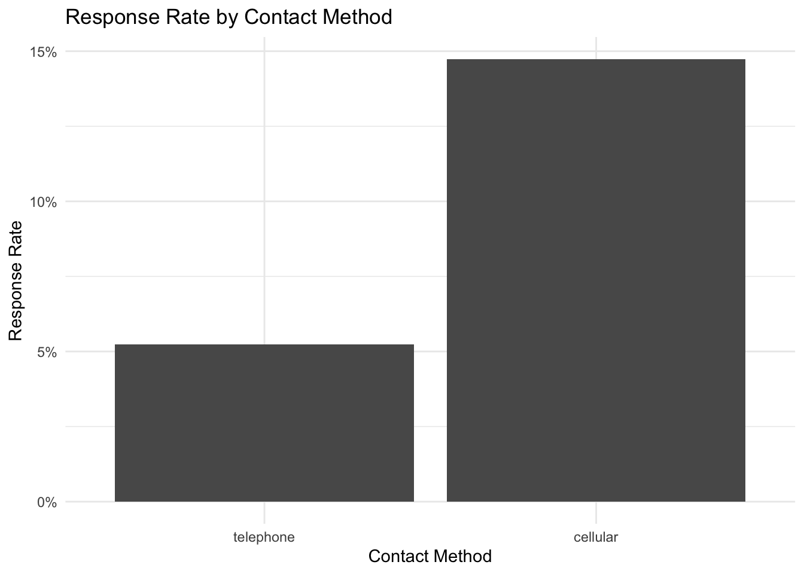
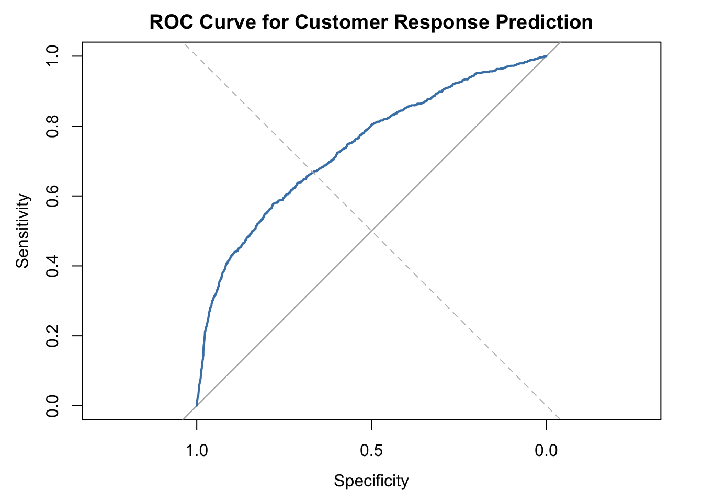
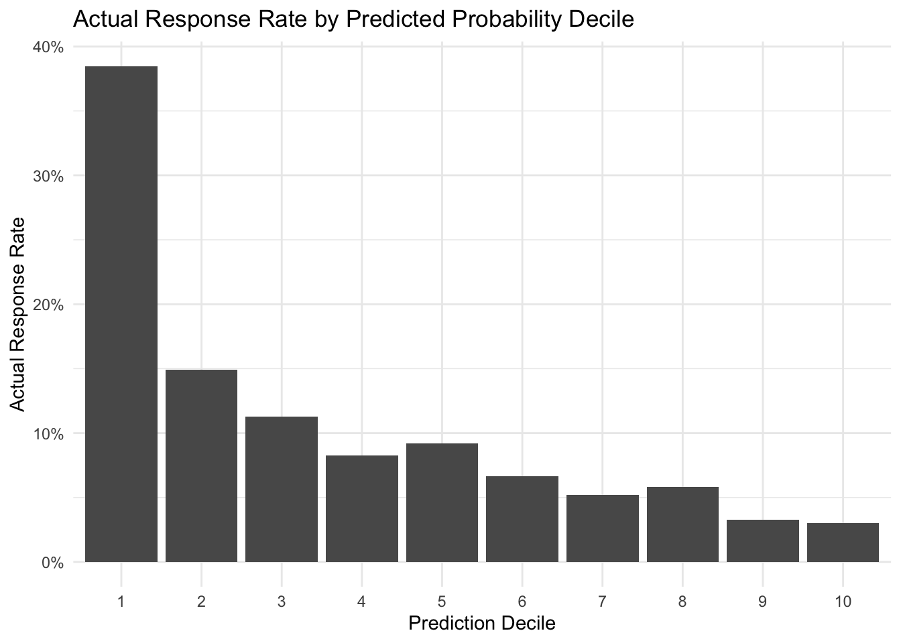
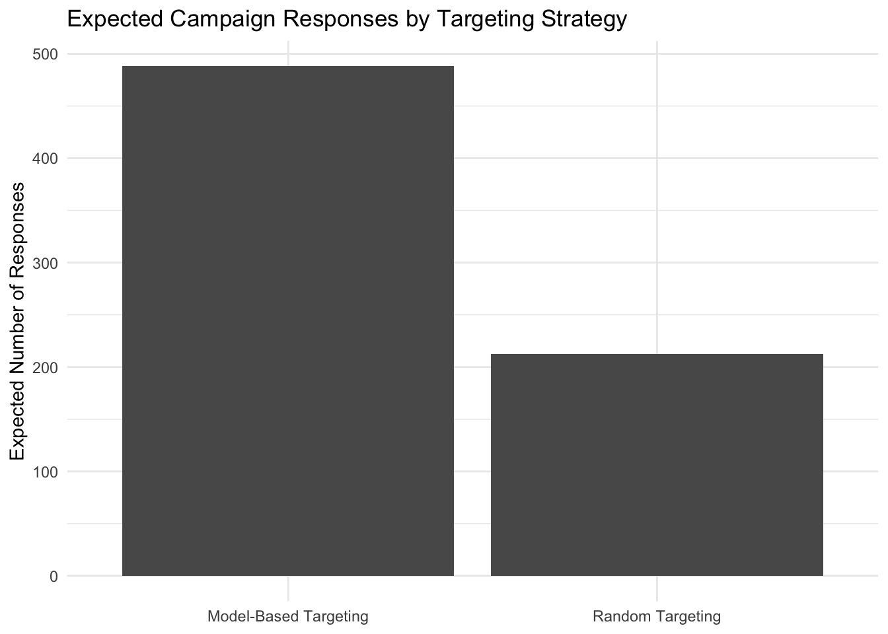

# A tibble: 2 × 2
Metric Value
<chr> <dbl>
1 Customers 41188
2 Features 11Customer Response Prediction: Targeting Telemarketing Campaigns
1 Business Understanding
1.1 Executive Summary
This project develops a predictive customer targeting model using 41,188 historical telemarketing records to help a retail bank improve campaign efficiency.
Rather than contacting every customer, the model ranks customers by their likelihood of subscribing to a term deposit, enabling more effective allocation of marketing resources.
1.1.1 Key Findings
- Built a deployable logistic regression model after removing data leakage
- Identified high-response customer segments through exploratory analysis
- Ranked customers by predicted response probability instead of relying on binary classification
- Demonstrated that model-based targeting outperformed random customer selection
1.2 Business Context
A bank runs telemarketing campaigns to promote term deposit accounts.
Calling every customer is costly and inefficient. Instead of treating all customers equally, the bank wants to use historical campaign data to identify customers who are more likely to respond positively.
A predictive model can help the marketing team prioritize customers, improve campaign efficiency, and reduce unnecessary outreach.
1.3 Business Question
Which customers are most likely to respond to a marketing campaign?
This project uses customer and campaign information to predict whether a customer will subscribe to a term deposit.
The goal is not only to build a predictive model, but also to translate model scores into a practical customer targeting strategy.
1.4 Analytical Workflow
The project follows a business-oriented predictive analytics workflow:
- Define the business context and question
- Understand the data
- Check for data leakage
- Explore customer response patterns
- Engineer features for modeling
- Build a baseline logistic regression model
- Evaluate model performance
- Rank customers by predicted response probability
- Recommend a customer targeting strategy
1.5 Setup
1.6 Data Loading
1.7 Data Leakage Check
The dataset includes a variable called duration, which measures the length of the phone call.
However, this variable would not be known before the bank decides whom to call. If we include duration in the model, the model would use information that is only available after the campaign interaction has already happened.
Therefore, duration should be removed before modeling.
1.8 Data Understanding
| Customers | Features | Positive Responses | Negative Responses | Response Rate |
|---|---|---|---|---|
| 41188 | 10 | 4640 | 36548 | 11.3% |
The dataset contains 41,188 historical telemarketing records.
Each observation represents one customer contacted during a marketing campaign.
The target variable (y) indicates whether the customer subscribed to a term deposit.
Key dataset characteristics:
• 41,188 customers
• 10 predictor variables (after removing data leakage)
• Binary classification problem
• Positive response rate: 11.3%
The relatively low response rate indicates a moderately imbalanced classification problem, making customer prioritization an important business objective.
1.8.1 Target Variable
The target variable is y.
yes: the customer subscribed to the term depositno: the customer did not subscribe
Because the business goal is to identify likely responders, this is a binary classification problem.
2 Understanding Customer Response
The overall response rate is 11.3%, meaning that most contacted customers did not subscribe to the term deposit. This confirms that the campaign has a low baseline conversion rate and that customer prioritization is important.
Age shows a non-linear response pattern. Customers older than 65 have the highest response rate, while customers between 35 and 55 respond at relatively lower rates. Younger customers under 25 also show above-average response rates.
Occupation is also strongly associated with response. Students and retired customers have the highest response rates, while blue-collar, services, and entrepreneur customers have lower response rates.
These patterns suggest that both demographic characteristics and life-stage indicators may be useful predictors for customer response.
2.1 Customer Response Distribution

Most customers did not subscribe to the term deposit, with only 11.3% responding positively. This indicates a moderately imbalanced classification problem where accurately identifying likely responders is more valuable than contacting every customer.
2.2 Response Rate by Age

Older customers exhibit higher response rates than younger customers, suggesting that age may be an important predictor of campaign success.
2.3 Response Rate by Job

Retired customers and students tend to respond at higher rates than other occupation groups, indicating that occupation may provide useful information for customer targeting.
2.4 Response Rate by Contact Method

2.5 EDA Business Takeaways
The exploratory analysis suggests several important targeting signals:
- Customer response is uneven across demographic groups.
- Students and retired customers show noticeably higher response rates.
- Age has a non-linear relationship with response.
- Contact method and campaign timing may be important predictors.
- Since the response rate is low overall, model-based customer prioritization is more useful than broad outreach.
These findings support the use of a predictive model to rank customers by response probability.
3 Predictive Modeling
3.1 Feature Engineering
Before modeling, categorical variables are converted into factors. This allows the logistic regression model to treat them as categorical predictors instead of plain text fields.
3.2 Train/Test Split
The dataset is split into training and testing sets.
The training set is used to fit the model, while the testing set is held out for evaluating predictive performance on unseen data.
| Dataset | Customers | Positive Responses | Response Rate |
|---|---|---|---|
| Training Set | 32950 | 3765 | 11.4% |
| Testing Set | 8238 | 875 | 10.6% |
3.3 Baseline Logistic Regression Model
Logistic regression is used as the baseline model because the target variable is binary and the model is easy to interpret.
In a marketing analytics setting, interpretability is important because business teams need to understand which customer characteristics are associated with higher response probability.
3.4 Predict Customer Response
The fitted model estimates the probability that each customer will subscribe to a term deposit.
Instead of producing only a binary prediction, the predicted probability provides a continuous score that can be used to rank customers for campaign prioritization.
The model generates a predicted probability for every customer, which becomes the basis for customer ranking rather than binary classification.
3.5 ROC Curve and AUC
ROC AUC evaluates how well the model separates responders from non-responders across different probability thresholds.
Area under the curve: 0.7374
Business Interpretation
ROC AUC evaluates how effectively the model ranks likely responders ahead of unlikely responders across all possible classification thresholds.
For customer targeting, ranking performance is more important than achieving high classification accuracy because marketing teams typically prioritize customers based on response probability rather than making binary yes/no decisions.
4 Business Application
4.1 Customer Ranking
Instead of using the model only as a yes/no classifier, the bank can use predicted probabilities to rank customers.
Customers with higher predicted probabilities should be prioritized for outreach.
4.2 Top Decile Analysis
The test set is divided into ten groups based on predicted response probability.
Decile 1 contains the customers with the highest predicted response probability. Decile 10 contains the customers with the lowest predicted response probability.
| decile | Customers | Average_Predicted_Probability | Actual_Response_Rate | Actual_Responses |
|---|---|---|---|---|
| 1 | 824 | 0.3640011 | 0.3847087 | 317 |
| 2 | 824 | 0.1632226 | 0.1492718 | 123 |
| 3 | 824 | 0.1261776 | 0.1128641 | 93 |
| 4 | 824 | 0.1116909 | 0.0825243 | 68 |
| 5 | 824 | 0.0988833 | 0.0922330 | 76 |
| 6 | 824 | 0.0854325 | 0.0667476 | 55 |
| 7 | 824 | 0.0669341 | 0.0521845 | 43 |
| 8 | 824 | 0.0486353 | 0.0582524 | 48 |
| 9 | 823 | 0.0375215 | 0.0328068 | 27 |
| 10 | 823 | 0.0234756 | 0.0303767 | 25 |

Business Interpretation
The results confirm that customers with higher predicted probabilities also exhibit substantially higher actual response rates.
For example, the top prediction decile achieved an actual response rate of approximately 38%, compared with only around 3% in the lowest decile.
This demonstrates that the model effectively ranks customers by response likelihood and can support more efficient campaign targeting.
4.3 Campaign Targeting Simulation
Suppose the bank has the budget to contact only the top 2,000 customers in the test set.
This simulation compares a model-based targeting strategy with random customer selection to estimate the business value of predictive targeting.
| Strategy | Customers_Called | Expected_Responses | Response_Rate | Lift_vs_Random |
|---|---|---|---|---|
| Random Targeting | 2000 | 212.43 | 0.11 | 1.0 |
| Model-Based Targeting | 2000 | 488.00 | 0.24 | 2.3 |

Business Interpretation
The model-based targeting strategy generated substantially more expected responses than random customer selection while contacting the same number of customers.
This demonstrates that predicted response probabilities can be translated into measurable business value by helping marketing teams prioritize customers who are most likely to respond, thereby improving campaign efficiency without increasing outreach costs.
4.4 Model Insights
| Customer Characteristic | Business Implication |
|---|---|
| Students | Prioritize outreach |
| Retired customers | Prioritize outreach |
| Customers aged 65+ | High-value target segment |
| Cellular contact | Preferred contact channel |
| Blue-collar occupations | Lower campaign priority |
| Telephone contact | Less effective contact channel |
The predictive model complements the exploratory analysis by translating observed customer patterns into actionable targeting insights. Together, the exploratory analysis and predictive model suggest that students, retired customers, older adults, and customers reached through cellular channels are among the segments with stronger response potential, while blue-collar occupations and telephone contacts are associated with lower response propensity.
Rather than contacting every customer, the bank should prioritize outreach toward customers with the highest expected response propensity. Combining predictive model scores with these business insights enables more efficient allocation of marketing resources and supports a more targeted customer acquisition strategy.
4.5 Business Recommendation
The model should be used as a customer prioritization tool rather than a simple yes/no classifier.
Because the overall response rate is low, contacting all customers is inefficient. The bank should rank customers by predicted response probability and focus outreach on the highest-scoring segments.
Recommended targeting strategy:
- Prioritize customers in the top prediction deciles.
- Use predicted probability as a customer ranking score.
- Avoid relying on the default 0.5 classification threshold, since it produces low recall.
- Track campaign response rate by model score band after deployment.
- Retrain the model periodically as customer behavior and campaign conditions change.
5 Management Takeaway
The predictive model helps the bank move from broad telemarketing outreach to targeted campaign execution.
Instead of asking:
Should we call every customer?
the bank can ask:
Which customers should we call first?
This makes the model directly useful for campaign prioritization, customer acquisition, and marketing efficiency.